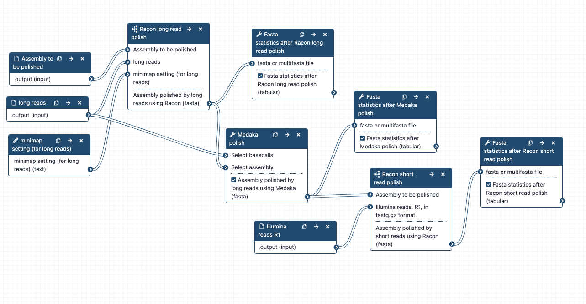

Assembly polishing; can run alone or as part of a combined workflow for large genome assembly. * What it does: Polishes (corrects) an assembly, using long reads (with the tools Racon and Medaka) and short reads (with the tool Racon). (Note: medaka is only for nanopore reads, not PacBio reads). * Inputs: assembly to be polished: assembly.fasta; long reads - the same set used in the assembly (e.g. may be raw or filtered) fastq.gz format; short reads, R1 only, in fastq.gz format * Outputs: Racon+Medaka+Racon polished_assembly. fasta; Fasta statistics after each polishing tool * Tools used: Minimap2, Racon, Fasta statistics, Medaka * Input parameters: None required, but recommended to set the Medaka model correctly (default = r941_min_high_g360). See drop down list for options. Workflow steps: -1- Polish with long reads: using Racon * Long reads and assembly contigs => Racon polishing (subworkflow): * minimap2 : long reads are mapped to assembly => overlaps.paf. * overaps, long reads, assembly => Racon => polished assembly 1 * using polished assembly 1 as input; repeat minimap2 + racon => polished assembly 2 * using polished assembly 2 as input, repeat minimap2 + racon => polished assembly 3 * using polished assembly 3 as input, repeat minimap2 + racon => polished assembly 4 * Racon long-read polished assembly => Fasta statistics * Note: The Racon tool panel can be a bit confusing and is under review for improvement. Presently it requires sequences (= long reads), overlaps (= the paf file created by minimap2), and target sequences (= the contigs to be polished) as per "usage" described here https://github.com/isovic/racon/blob/master/README.md * Note: Racon: the default setting for "output unpolished target sequences?" is No. This has been changed to Yes for all Racon steps in these polishing workflows. This means that even if no polishes are made in some contigs, they will be part of the output fasta file. * Note: the contigs output by Racon have new tags in their headers. For more on this see https://github.com/isovic/racon/issues/85. -2- Polish with long reads: using Medaka * Racon polished assembly + long reads => medaka polishing X1 => medaka polished assembly * Medaka polished assembly => Fasta statistics -3- Polish with short reads: using Racon * Short reads and Medaka polished assembly =>Racon polish (subworkflow): * minimap2: short reads (R1 only) are mapped to the assembly => overlaps.paf. Minimap2 setting is for short reads. * overlaps + short reads + assembly => Racon => polished assembly 1 * using polished assembly 1 as input; repeat minimap2 + racon => polished assembly 2 * Racon short-read polished assembly => Fasta statistics Options * Change settings for Racon long read polishing if using PacBio reads: The default profile setting for Racon long read polishing: minimap2 read mapping is "Oxford Nanopore read to reference mapping", which is specified as an input parameter to the whole Assembly polishing workflow, as text: map-ont. If you are not using nanopore reads and/or need a different setting, change this input. To see the other available settings, open the minimap2 tool, find "Select a profile of preset options", and click on the drop down menu. For each described option, there is a short text in brackets at the end (e.g. map-pb). This is the text to enter into the assembly polishing workflow at runtime instead of the default (map-ont). * Other options: change the number of polishes (in Racon and/or Medaka). There are ways to assess how much improvement in assembly quality has occurred per polishing round (for example, the number of corrections made; the change in Busco score - see section Genome quality assessment for more on Busco). * Option: change polishing settings for any of these tools. Note: for Racon - these will have to be changed within those subworkflows first. Then, in the main workflow, update the subworkflows, and re-save. Infrastructure_deployment_metadata: Galaxy Australia (Galaxy)
{kind=link}